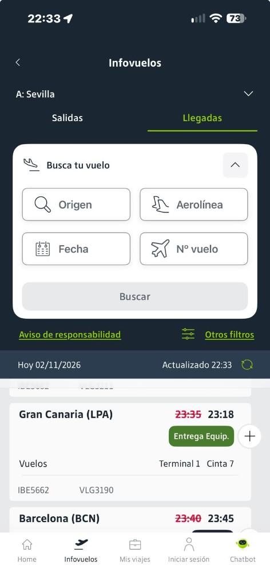

AeroAPI gastado en esta evidencia: 0 · Solo Infovuelos JSON. Hard stop cuota 2300 aparte.

| Código | Origen | Fecha | Hora | Sala Aena | Cinta Aena | Cinta AeroAPI | Acuerdo | Estado |
|---|---|---|---|---|---|---|---|---|
| VLG3205 | TFN | 03/11/2026 | 11:55:00 | A | 2 | — | aena_only | SCH |
| IBE5676 | TFN | 03/11/2026 | 11:55:00 | A | 2 | — | aena_only | SCH |
| VLG3180 | LPA | 03/11/2026 | 12:05:00 | A | 1 | — | aena_only | SCH |
| IBE5652 | LPA | 03/11/2026 | 12:05:00 | A | 1 | — | aena_only | SCH |
| VLG3164 | FUE | 03/11/2026 | 13:00:00 | A | 2 | — | aena_only | SCH |
| IBE5637 | FUE | 03/11/2026 | 13:00:00 | A | 2 | — | aena_only | SCH |
| VLG3209 | TFN | 03/11/2026 | 16:40:00 | A | 2 | — | aena_only | SCH |
| IBE5680 | TFN | 03/11/2026 | 16:40:00 | A | 2 | — | aena_only | SCH |
| VLG3211 | TFN | 03/11/2026 | 23:25:00 | A | 1 | — | aena_only | SCH |
| IBE5682 | TFN | 03/11/2026 | 23:25:00 | A | 1 | — | aena_only | SCH |
| VLG3190 | LPA | 03/11/2026 | 23:50:00 | A | 3 | — | aena_only | SCH |
| IBE5662 | LPA | 03/11/2026 | 23:50:00 | A | 3 | — | aena_only | SCH |
| IBB5752 | LPA | 04/11/2026 | 11:40:00 | — | — | — | none | SCH |
| VLG3180 | LPA | 04/11/2026 | 12:05:00 | — | — | — | none | SCH |
| IBE5652 | LPA | 04/11/2026 | 12:05:00 | — | — | — | none | SCH |
| VLG3205 | TFN | 04/11/2026 | 12:35:00 | — | — | — | none | SCH |
| IBE5676 | TFN | 04/11/2026 | 12:35:00 | — | — | — | none | SCH |
| IBB5756 | TFN | 04/11/2026 | 19:15:00 | — | — | — | none | SCH |
Si Aena o AeroAPI cambian cinta (respecto a la otra o a la última conocida) → aviso inmediato a vigilados + análisis manual.